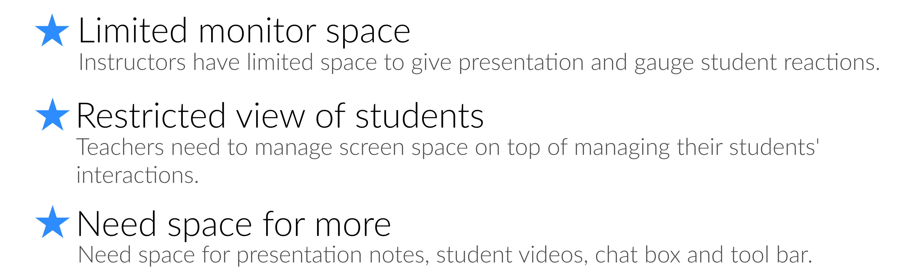

During our research, we surveyed around 18 teachers and students.
Now let's go more in depth with the pain-points of our users...
One of the problems that we came across was that instructors had limited space on their monitors to give a presentation, and gauge students' reactions at the same time.


In the image below a teacher tries to monitor both chat and presentation points at once.

For example, while in screen share, if you wanted to create a poll, you had to open up an other window in order to create that poll. You also had to prepare the polls in advance because it was designed that way. Even on Zoom’s website, it states that the polling feature wasn’t built for polling ‘on the fly.’
So as an alternative, sometimes teachers would use other platforms like Slack to post up a question for voting purposes.

If a large group of students put up their reactions at different times, it can be hard for the instructors to tally up the results because the emojis will disappear.
Teachers can bring up the list of participants to see reactions, but not long enough to tally large classes